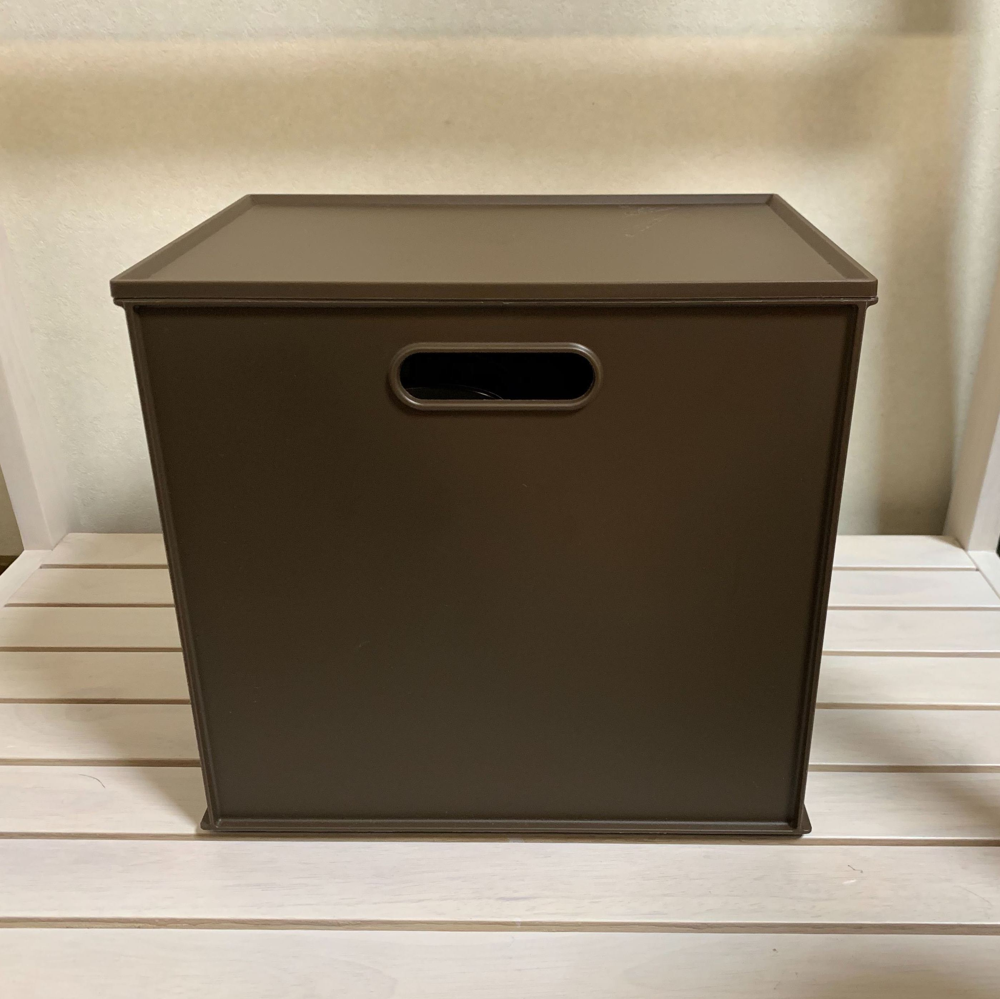

About
人情 ：①他人への情けや思いやり／②人間の自然な心の動き
ここ数年で私たちは、拡張現実〔Augmented Reality〕にずいぶん親しくなりました。
美人になれるカメラに、街角からモンスターが飛び出すゲーム。このテクノロジーは私たちの日常をもっと楽しく、もっと刺激的に「拡張」してくれます。
思えば、世界中と繋がれるＳＮＳも現実を「拡張」する技術の一つでした。テクノロジーの進歩は現実の拡張そのものなのかもしれません。
一方、広がりすぎた現実はかえって私たちを窮屈にし、現実のサイズを錯覚させることもあります。
SNS上でふと綴った自分の気持ちが見知らぬ人から批判されるなんて、まるで自分の気持ちさえ他人のためにあるかのようです。
そんな現実を前に、本展は「人情の拡張」をテーマに掲げました。
人情には「情けや思いやり」という意味の他に「人間の自然な心の動き」という意味があります。
今回、展示する作品は全て、気にも留めないコトや慣れ親しんだモノに焦点を当てるものです。
人のための気持ちと自分だけの心の動き、この２種類の「人情」が現実の姿を変えてくれる体験を目指しました。
来場されるみなさまが、よりよい現実の姿を見つけることを心から願っております。
人情 ：①他人への情けや思いやり／②人間の自然な心の動き
ここ数年で私たちは、拡張現実〔Augmented Reality〕にずいぶん親しくなりました。
美人になれるカメラに、街角からモンスターが飛び出すゲーム。このテクノロジーは私たちの日常をもっと楽しく、もっと刺激的に「拡張」してくれます。
思えば、世界中と繋がれるＳＮＳも現実を「拡張」する技術の一つでした。テクノロジーの進歩は現実の拡張そのものなのかもしれません。
一方、広がりすぎた現実はかえって私たちを窮屈にし、現実のサイズを錯覚させることもあります。
SNS上でふと綴った自分の気持ちが見知らぬ人から批判されるなんて、まるで自分の気持ちさえ他人のためにあるかのようです。
そんな現実を前に、本展は「人情の拡張」をテーマに掲げました。
人情には「情けや思いやり」という意味の他に「人間の自然な心の動き」という意味があります。
今回、展示する作品は全て、気にも留めないコトや慣れ親しんだモノに焦点を当てるものです。
人のための気持ちと自分だけの心の動き、この２種類の「人情」が現実の姿を変えてくれる体験を目指しました。
来場されるみなさまが、よりよい現実の姿を見つけることを心から願っております。
Outline
| 日時 |
2020.1.18 (sat) 13:00-19:00 2020.1.19 (sun) 10:00-18:00 |
|---|---|
| 場所 |
東京都渋谷区恵比寿西 1-17-2 http://www.a-m-u.jp/ |
| 主催 |
早稲田大学文化構想学部 クリエイティブメディアR&Dゼミ |
| 監修 |
ドミニク・チェン准教授 |
| お問い合わせ |
cmrd.seminar@gmail.com |
Works1
-
.jpg) animercy animercy
animercy animercy -
 ドット・フルサト pxcels of memories
ドット・フルサト pxcels of memories -
魂の営業マンDJプレイ

制作：平田純也/多田夏帆
「KARAOKE」は日本の偉大な発明の一つであり、今や娯楽の域を越えビジネスの社交場としても用いられるようになりました。
上司や取引先の前でマイクを握り、奇怪なビジネスセンスを求められたビジネスマンは今晩も知恵と努力でその歌声を振り絞ります。
この作品は極東のカルト的文化「ビジネスカラオケ」と、そこで磨かれ受け継がれてきた「カラオケネタ」をインタビューによりあぶり出し、決して表に出ることのなかった日本のビジネスマンの技をDJプレイにより凝縮して再現するものです。
さぞかし奇妙に見えるでしょうが、ビジネスに多くを捧げた人の"魂"も同時に見えてくるはずです。
DJ KARAOKE in da building!!!
Junya Hirata / Natsuho Tada
“KARAOKE” is one of the greatest Japanese inventions, and it is not only used for recreation but also in business social meeting places.
The businessperson takes a mike in front of bosses and customers, comes up with some showmanship and strains his/her voice to sing.
Based on interviews with business people, this performance reveals the reality of BUSINESS KARAOKE, the cult culture from the Far East, and KARAOKE skills that have been polished and inherited through time.
We present the art of KARAOKE by Japanese business people, which has never been revealed to the world before, through remixing and DJ-ing them.
This may feel odd, but it should be able to reveal the souls of the people who have dedicated their lives to their companies.
魂の営業マンDJプレイ DJ KARAOKE in da building!!! -
しゅぱむ

制作：林崎美侑/小林未奈
現代のネット社会においてスマホを持つことはもはや当たり前となっています。
しかし私たちはその"当たり前"に潜んでいる危険性に目を向け、向き合えているのでしょうか。
スパムメールは日常に紛れ込んでいる悪意であり、その文面はいかにも「らしく」書いてあります。
人の興味を引こうとする文章からにじみ出る作家性、そして表現の面白さ………それはまるで一つの滑稽な物語のようです。
スパムメールという物語は詐欺師が一方的に送りつけてくるものであるため、これらに騙される被害者は一見受動的に見えます。
しかし実際にはこの一連の詐欺の構造においてスパムメールの受信者は、メールの開封や返信、その内容の真意の判断など、常に能動的な選択を行なっているのです。
本作品では可愛いRPGゲームの見た目でスパムの面白さを表現する一方、プレイヤーをスパムメールと同じように一方的に能動的な選択画面迫られる状況に置くことで、その面白さと怖さを自分の体験として経験できるような作品となっています。
He's coming
Miyu Rinzaki / Mina Kobayashi
Smartphones are essential to our lives nowadays, but are we aware of the hidden risks of this reality we live in?
Spam is one of the evils we face everyday. The texts are intentionally confusing and trying to defuse people; however, their ways to attract people’s attention are creative and ingenious, sometimes almost fun.
Spams are sent one-sidedly by the scammer, so it seems that victims have passive existence; however, those victims in most of the situations make their own self-induced choices through opening and replying to the email, and trying to understand the intention of it.In this role-playing game, players can experience how interesting and fearful the spams can be, by making their own active choices.
 しゅぱむ He's coming
しゅぱむ He's coming -
 写ルンですが no more photo
写ルンですが no more photo -
(非)日常デザイン

制作：菅沢若菜/島野史子/天野凛
本作品は一風変わったゴミ箱である。
使用者に「楽しい」「面白い」といった感情を喚起させるデザインを施しているのである。
人が近寄れば動き、ゴミを捨てれば光る、まるで生き物のように反応するゴミ箱だ。
ゴミを捨てるといった日常の単純な行為に対して、時に人は「面倒くさい」というマイナス感情を抱く。
しかし、誰もが童心に帰ってしまうような「面白さ」を前にして、人は「面倒くさい」気持ちを忘れ、思わずゴミを捨てたくなってしまうのではないだろうか。
この作品は、使用者の心を柔らかくするような面白みのデザインが、強制でない無意識的なマナーの向上に繋がる可能性を示唆している。
(un)usual design
Wakana Sugesawa / Fumiko Shimano / Rin Amano
These pieces of art are very unique trash cans.
Through their design, they bring up the feelings of “fun” and “interest” in their users.They move forward as people approach them and light up as people use them …, their reactions almost make us believe that they are organic creatures.
People tend to feel bothered with some daily activities such as throwing away the trash; however, when they face “humorous” actions, they tend to behave childish and they forget those negative emotions and feel stimulated to throw trash away properly.
Through the power of design, we believe that we can change people’s behavior positively without forcing them.
 (非)日常デザイン (un)usual design
(非)日常デザイン (un)usual design -
Interactive Animation
 PNG.PNG)
制作：佐々木杏奈/河本のぞみ
コミュニケーションとは何だろうか。
言語的要素のほかにも、非言語的な願望や、共感、想像、沈黙が潜んでおり、私たちの普段の会話に大きな影響を及ぼす。
そういった非言語的ファクターの関わりを目の当たりにする機会は少ない。
今回の実験では、ファクターがどのように生じ発達していくかを可視化するために粘土とアニメーションを使用した。
掴む、ちぎる、刺す、つぶすといった粘土に対するアクションは、過去の個人のリアクションの積み重ねである粘土の造形への反応だ。
あなたが粘土に対して与える変化は作品の一部として映像に残る。
そのリアクションの積み重ねを見ることであなたは何を感じるだろうか。
Interactive Animation
Anna Sasaki / Nozomi Kawamoto
What is "communication"?It consists not only of linguistic elements but also non-verbal elements such as desire, empathy, imagination, and silence.
These elements have a big influence on our daily conversations; however, it is hard to see the impact of non-verbal communication.
In order to visualize the occurrence and development of non-verbal elements, we use clay animation.Audience’s interactions with the clay, such as grabbing, tearing off, pricking and crushing are the reactions to the clay’s shape, which is an accumulation of previous audience’s actions.
All the changes will be recorded as part of animation.When you see the accumulation of reactions, what do you perceive?
.PNG) Interective Animation Interective Animation
Interective Animation Interective Animation -
オモタミ omotami
-
guestbook.tokyo guestbook.tokyo
Works2
-
 あなたは私の夢を見るか Do You Dream of Me
あなたは私の夢を見るか Do You Dream of Me -
不便益デジタルカメラ
.jpg)
制作：宮崎遥
デジタルデバイスが発達し、誰もが気軽に写真を撮れるこの時代。何枚も連写したその写真、見返しますか？
手軽さゆえに、撮影の本当の価値を見失っていませんか？
本作品はそんな現状に一石を投ずる不便だからこその益を提唱するデジタルカメラである。不便から見つめ直す、新しい撮影のかたち。
Benefits of the Inconvenience of Digital Cameras
Haruka Miyazaki
In this era when digital devices have been developed and everyone can take pictures easily, do you look back at the photos taken in sequence?
Haven’t you lost sight of the true value of photography because of its simplicity? This is a digital camera that advocates the benefit of being inconvenient to create a stir in the current situation.
A new form of photography, reconsidered from the inconvenience perspective.
 不便益デジタルカメラ Benefits of the Inconvenience
不便益デジタルカメラ Benefits of the Inconvenience
of Digital Cameras -
LaserPainting LaserPainting
-
音楽家具 Furnitune
-
プロット投稿サイト

制作：竹田毬恵
スマートフォンが普及し、ネットの世界がより身近になった現代社会において、素人が趣味の一環として創作するウェブ小説の存在感は日々増している。
ネットという手軽で自由な表現の場を得た我々にとって、小説を書くという趣味はより大衆化されたものとなった。
しかし、完成品である小説が多くの人の目に触れる機会を与えられる一方で、小説執筆の準備段階で作成される「プロット」が注目されることはほとんどなかった。
本作品は、そんな「プロット」を投稿・閲覧・コメントするためのウェブサイトとなっている。
今まで日陰の身であった「プロット」を投稿するための場を作り出すことで、新たなウェブ小説の執筆・閲覧体験を創出したい。
Plot Posting site
Marie Takeda
Recently, the presence of web fiction created by amateurs is increasing everyday.
The hobby of writing novels has become more popular for people, who have gained a place to express easily and freely on the Internet.
However, while the completed novel can have an attention of many people, the “plot” created in the preparation stage of the novel writing has been underrated.
In this work, I created a website for posting, viewing, and commenting on such “plots”.
I would like to create a new web fiction writing and browsing experience by creating a place to post "plots” which have been overlooked previously.
 プロット投稿サイト Plot Posting site
プロット投稿サイト Plot Posting site -
bias-labeled packing

制作：高橋二稀
毎日、誰かが自分の容姿を気にしています。
身体的なジェンダーバイアスが蔓延した社会の中で、こうあるべきと言うバイアスに怯えています。
男性だから高身長でないといけませんか？女性が筋肉質ではダメでしょうか？
バイアスは、ビリビリに破いて捨てましょう。あるいは、笑い飛ばすのが一番です。
日々笑い飛ばせば、レッテルは「くだらないレッテル」に変わるはずです。
毎日、およそ1,180万個の宅配便が開封されています。本作品では、人ではなくこれらの配達される品物たちにレッテルを貼ります。
日々あなたのもとに届く、くだらないレッテルを存分に笑ってください。無抵抗にレッテルを貼られた品物たちは、どこか私たちに似ています。
bias-labeled packing
Niki Takahashi
Most people care too much about their everyday appearance.
They are scared of the society which is full of physical gender bias.
Do men have to be tall only because they're men? Can’t women be muscular?
Let’s tear off those biases.
Or, maybe it's best to laugh them off.
If you laugh them away every day, they will become "a frivolous label".
Every day, about 11.8 million packages are opened.
In this work, we label these delivered goods, not people.
Laugh at the ridiculous labels you receive every day.
Those goods that are labelled without resistance seems somewhat like us.
 bias-labeled packing bias-labeled packing
bias-labeled packing bias-labeled packing -
Webサイト窓枠解放運動

制作：佐久間響子
Webサイトは平面なのだろうか？
平面に作られているのは、私たちがパソコンやスマートフォンという画面＝窓枠を通してWebサイトを見ているからである。
Webサイトはその媒体に最適化された形に姿を変化させている。
VRという空間表現媒体を通じてWebサイトを見るとき、私たちは窓枠に囚われる必要はないはずだ。
にも関わらず、現状のVRではパソコンに最適化されたWebサイトの閲覧を強いられている。
この作品は、VRが当たり前になる時代のために、Webサイトを平面の窓枠から解放し、Web体験をアップデートする「新しいVR内Webブラウザ」を提案する。
The liberation movement of websites' window frame
Kyoko Sakuma
Are websites two dimensional? Websites are created two dimensional because we look into websites through devices' window, which I call "frame", such as personal computers, and smartphones.
The form of websites are adapted to their devices.
When we look into websites with VR googles, we are liberated from window frames, although we are forced to look into websites which are two dimensional and adapted to personal computers.
This work will propose "New VR Browser", which can free the websites from two dimensional screens and update the experience of accessing websites for the time when we use VR as the de facto standard.
 Webサイト窓枠解放運動 The liberation movement
Webサイト窓枠解放運動 The liberation movement
of websites' window frame -
服交換真景 服交換真景
-
.jpg) poemeshi poemeshi
poemeshi poemeshi -
感情サプリ

制作：神代真優
近年、ポジティブな感情だけでなく、様々な感情をバランス良く持っていることが”心の健康”とされています。
しかし日常で、様々な感情をバランス良く摂取したり、体調のように簡単に薬で健康を保つことは難しい。
「感情サプリ」では、あなたが今抱いている感情を診察し、心の健康のために足りていない感情を簡単に摂取するためのサプリメントを処方するという新しい健康法を提案します。
Supplements for Emotions
Mayu Kumashiro
In recent years, "mental health" has been defined as having a well-balanced variety of emotions, not just positive ones.
However, it is difficult to have a balanced intake of various emotions, or maintain mental health by taking medicine.
"Supplements for emotions” proposes a new health method by examining your current emotions and giving you supplements to help you intake feelings that are not enough for your mental health.